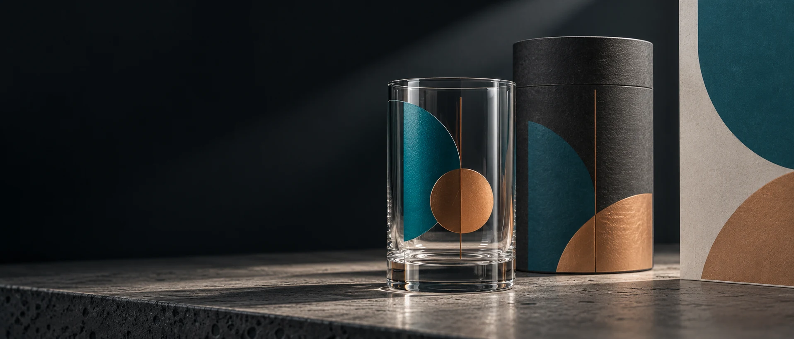
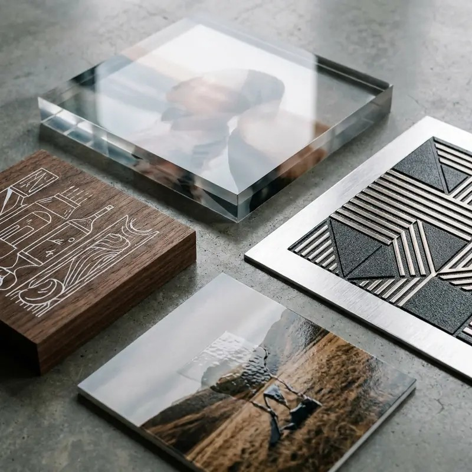
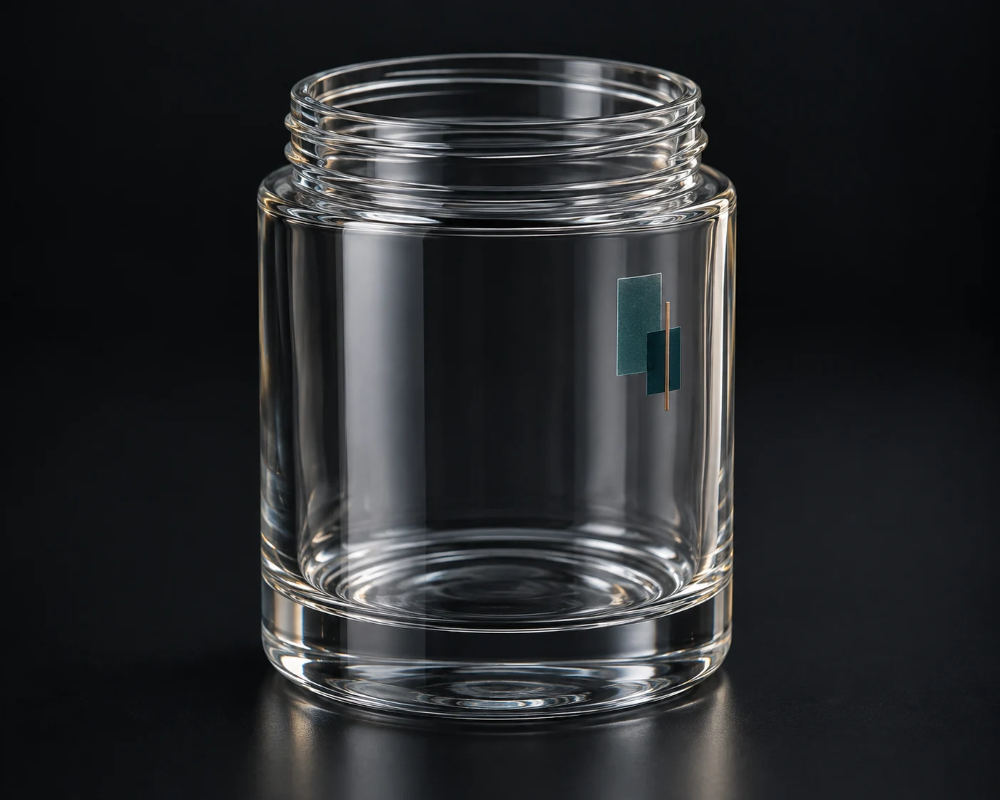
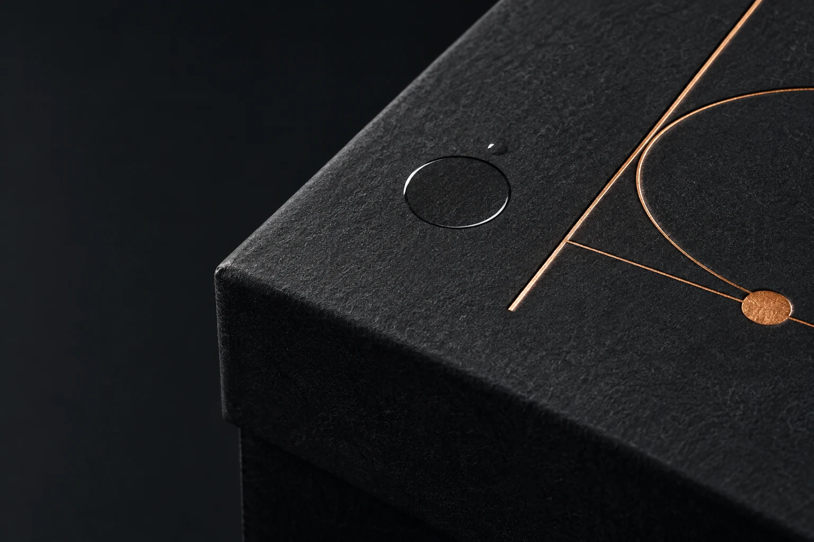
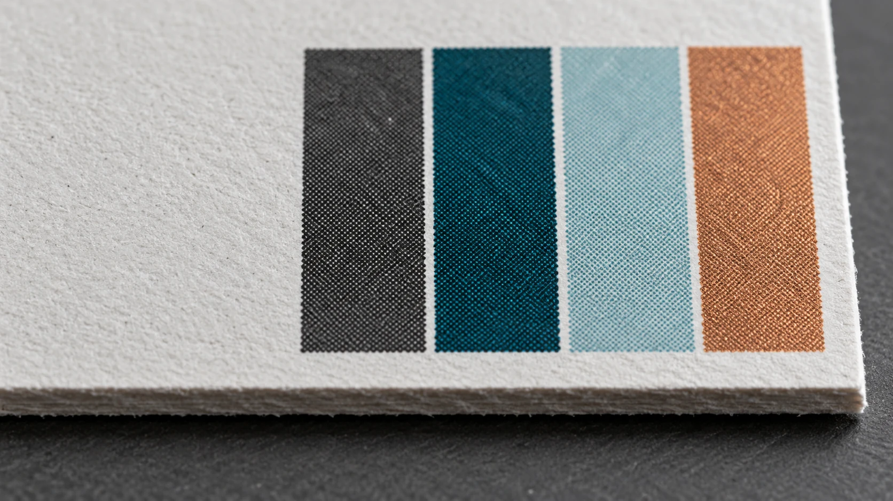
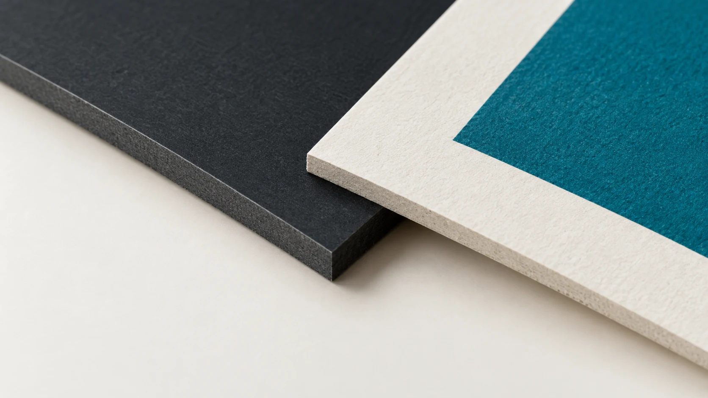
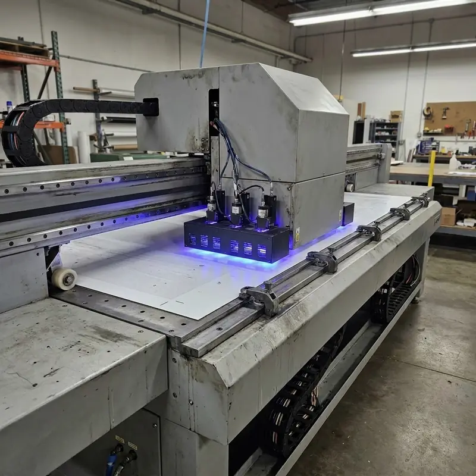

COMMERCIAL PRINT PRODUCTION / GUJRAT
Feel the print.
STICKERS, LABELS AND DECALS, object printing, packaging, commercial print and large-format brand environments shaped around the physical job.
PRINT IS A SURFACE EVENT
Detail before declaration.
HDC begins with physical evidence: the edge, colour, registration, finish and the way print responds to the intended material.
Compare production routes
Label and decal applications routed through the confirmed object, surface and finish.
↗Object printing and decorative applications reviewed against the specific surface.
↗Commercial print for packaging, stationery and branded printed matter.
↗Large-format work planned around the confirmed space, substrate and project scope.
↗PRODUCTION METHODS
Process follows the physical job.
WHERE PRINT LIVES
Surface is part of the decision.
A successful print application considers material, finish, form and intended handling before a production route is chosen.
Explore Surface Lab
COMMERCIAL USES
Surfaces become brand media.
The service architecture stays simple. The applications underneath it can be specific: labels, gifts, packaging, objects, displays and environments routed by material, scale and intended use.
Route the application
CONTROL THE EDGE
Quality lives close up.
The decision becomes visible at the boundary: colour response, registration, surface and finish.



PRINT AT ARCHITECTURAL SCALE
Built for the space it needs to inhabit.
Large-format work is planned around the confirmed environment, application and production scope. Project evidence will appear here only when it is verified and approved for publication.
Explore large formatA CONTROLLED PRODUCTION PATH
Understand. Prepare. Produce.

THE QUALITY REGISTER
Quality is controlled.
SELECTED WORK
Real work, only.
This space is reserved for HDC-owned or publication-approved project evidence. We do not present synthetic visuals as client case studies.
See the evidence policyBRING US THE SURFACE
We’ll talk print.
Share what needs to be printed, the quantity, dimensions, material or surface and artwork status. HDC will help identify the appropriate route.
Choose an application to carry useful context into the enquiry form.
Prepare your enquiryApplication · Quantity · Dimensions · Surface/material · Artwork status · Required date
Request a quoteCall 0317 7267318Email HDC